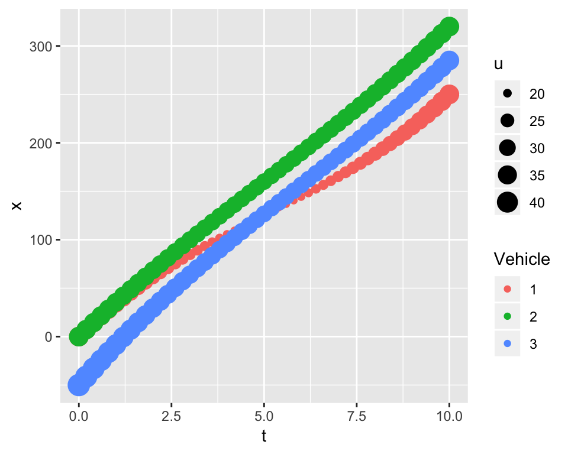

Bottleneck
Now, we turn attention to a bottleneck where there is a lane drop from two to one-lane.
To better understand to various factors that can affect a breakdown, we will investigate a “zipper merge.” Visual inspection of a \(t-x\) trajectory reveals much about the process.1 While we assume that all drivers are self optimizers in the attempting to minimize delay, drivers have unique styles. Some are more aggressive than others taking on risks. We will identify drivers by aggressive behavior by inspecting their individual \(t-x\) trajectories.
A Zipper Merge
Imagine that we shrink ourselves down to a size that is sufficiently small to observe a zipper close up. That’s right, a zipper. Let’s say, a jacket zipper. We will stand on the zipper slider and look in the direction where the zipper tapes are separated. The zipper teeth on the two tapes link together or merge at the slider. This mechanism is analogous to standing on the side of a freeway looking upstream where the vehicles merge at a bottleneck. Regardless of how fast the zipper slider is pulled, the zipper tapes become secure when the teeth link together at the slider. The zipper works flawlessly because the rows of zipper teeth are the same size, move at the same speed, are evenly spaced and perfectly aligned to allow the two tapes to link together without jamming.
The incoming vehicles on a freeway, on the other hand, are typically neither the same size, traveling at the speed, evenly spaced, nor aligned. Instead, vehicles must change speed and carefully merge together to avoid crashing into one another. Theoretically, it is possible to achieve a zipper merge under both low-speed and high-speed conditions as shown below in the left and right panels.

Interestingly and despite the differences in speed, the two \(t-x\) trajectories have similar shapes. Vehicles labelled as 1 and 2 are traveling side-by-side in separate lanes when they enter a bottleneck. Vehicle 3 is trailing behind them. At the end of merge vehicle 1 tails vehicles 2 and 3. All three vehicles are traveling at the same speeds at the beginning and end of the merge. To depict these individual behaviors, the same time-varying acceleration function is used for each vehicle trajectory:
- \(\ddot{x}(t) = \frac{d^2x}{dt^2} = a - b * t\)
where \(t\) denotes time in seconds (Elefteriadou 2014). The constants \(a\) and \(b\) are estimated by using the boundary conditions. Model calibration is discussed presently. At this point, it is important to understand that each driver has the ability to accelerate and decelerate, change speed, to safely merge and maintain a safe headway distances of \(h_{safe}\) at the bottleneck at times \(t\) = 10 and 40 seconds shown on their respective panels.
Consider the low-speed merge on the left that is completed after 10 seconds where all vehicles have the same initial and final speeds of \(u\) = 25 mph at \(t\) = 0 and 10 seconds, respectively. The drivers of vehicles 2 and 3 are more aggressive than driver 1. Driver 1, who is the least aggressive, decelerates to allow driver 3 to pass. Their trajectories cross and appear to do so with minimum risk of a crash. Both vehicles have slowed to speeds less than 25 mph when their paths cross. At the end of the low-speed merge, all vehicles are traveling at \(u\) = 25 mph and have a safe distance headway of \(h_{safe}\) = 35 feet, the safe headway distance for this speed.
The high-speed merge has similar characteristics, but the likelihood of a merge at these speeds is unlikely. All vehicles are operating at 90 mph at times \(t\) = 0 and 40 seconds. Vehicles 1 and 3 are crossing at speeds in the vicinity of 90 mph. A merge where two vehicles cross paths at these speeds may occur on a motor raceway where the drivers are professionals and trust the judgement of their competitors.
A Non-linear Model of Acceleration
What is the mathematical model that describes the merge computer simulations depicted above? It is the \(\ddot{x}(t)\) model described above. The model is incorporated in the zipper function that was used to create the plots. Given the complexity of a merge, the zipper algorithm at this time is limited to three vehicles only. The \(\ddot{x}(t)\) model is calibrated for each vehicle.
Let’s begin by looking at calibrating a model for a single vehicle. Integrating the function leads to the following speed \(u(t)\) and distance \(x(t)\) functions:
- \(u(t) = u(0) + a * t - \frac{b}{2} * t^2\)
- \(x(t) = x(0) + u(0) * t + \frac{a}{2} * t^2 - \frac{b}{6} * t^3\)
where the initial speed and distance are denoted as \(u(0)\) and \(x(0)\). There are two unknowns \(a\) and \(b\) that can be solved by considering the end conditions where the merge ends at \(t = t_{end}\) where \(u(t_{end})\) and \(x(t_{end})\) are specified values. Given that we have two equations and two unknowns, \(a\) and \(b\) can be calculated. For vehicle 1, the lead vehicle, \(u^1(0), u^1(t_{end}), x^1(0)\) and \(x^1(t_{end})\) must be specified.
While the same model calibration procedure is used for following vehicles, the safe driving function, \(h_{safe}\) function described in the Ring-Road section is used for each lead-follower vehicle pair. For above, vehicles 1 and 2 and vehicles 2 and 3. For example, take the following vehicle 2. The speeds \(u^2(0)\) and \(u^2(t_{end})\) must be specified. The distances \(x^2(0)\) and \(x^2(t_{end})\) must be specified. These distances are \(x^2(0) = x^1(0) - h_{safe}(u^2(0),l_{eff})\) and \(x^2(t_{end}) = x^1(t_{end}) - h_{safe}(u^2(t_{end}),l_{eff})\). This step is conducted for the vehicle 3. To get a better understanding of the model calibration approach, consider a car-following scenario.
A Car-Following Scenario
The \(t-x\) trajectories below is for the same three drivers described above. In this simulation the vehicles 2 and 3 are following vehicle 1 on a single traffic lane. The driver of vehicle 1 decelerates from 60 to 20 mph and at time \(t\) = 5 seconds, the vehicle has traveled a distance of 500 feet. Vehicle 2, who is 100 feet behind vehicle 1, has a speed of 65 mph at \(t\) = 0. At \(t\) = 5 seconds, it has a speed and location of 20 mph and a location of 467 feet, thus maintains a safe headway distance of 33 feet at speed 20 mph. The driver of vehicle 3 having a speed of 80 mph is the most aggressive driver and well behind vehicle 2 at \(t\) = 0. At \(t\) = 5 seconds, vehicle 3 to avoid rear-ending vehicle 2 must maintain a speed of 20 mph and safe headway distance of 33 feet.

Another reason for showing this simulation is to reaffirm the importance of a \(t-x\) trajectory and to highlight the features of the \(\alpha(t) = a - b t\) acceleration model. For example, the head-ways of vehicles 2 and 3 before the merge are \(h\) = 100 and 250 feet, respectively. After the merge, they are 33 feet each. The traffic density after the merge has increased exponentially The maximum speeds of vehicle 1, 2 and 3 are 60, 65 and 80 mph, respectively. With the exception of vehicle 3, these speeds are within the law.
Car-Following and Traffic Breakdown
The preceding example describes traffic breakdown. The traffic transitions from a free-flow, \(X = 0\), to a congested state, \(X = 1\). The example below is another example of traffic breakdown using the run function. The run allows the user to specify any number of vehicles, whereas the zipper is limited to three vehicles. There is one minor difference. The lead vehicle use exponential \(u = exp(-\lambda * t)\) and the following vehicles use non-linear \(\alpha(t) = a - b t\) acceleration models. The lead vehicle shown below has a concave trajectory from \(t_0\) to \(t_3\), indicating a decline in speed. Vehicle 2 and 3 have linear and convex trajectories. For vehicle 3, the driver is accelerating until reaches point \((t_1, x_2)\) where it begins to decelerate. As mentioned many time before, each driver of a lead-follower pair adjusts his or her speed independently from another pairs.
Driver reaction and driver sight lines play important roles in the \(CF\) approach.
The role they play is most easily explained by identifying the times when important events occur, \(t_1, t_2, t_3, t_4\) and \(t_5\). The simulation ranges from \(t_0\) to \(t_4\). Time \(t_3\) is the time the lead vehicle reaches the bottleneck \(x_0\) at \((t_0,x_0)\). Times \(t_1\) are the times the following vehicle drivers react and begin to decelerate. These times depend on several factors, including lead and following vehicle speeds, vehicle spacing and driver response. For example, the driver sight-line for vehicle 2, shown by the broken line connecting the points \((t_1, x_1)\) and \((t_2, x_2)\), gives a sense of how this driver processes the information. The algorithm uses this information, points \((t_1, x_1)\) and \((t_2, x_2)\), to calibrate the \(\alpha(t) = a - b t\) speed model and estimate a \(t-x\) trajectory for the vehicle. This step is repeated for next vehicle that enters the bottleneck. The trajectories for each of three vehicles shown in the graph are unique. Times \(t_5\) are the times a following vehicle reach the bottleneck location \(x = 0\). They are used to estimate the time head-ways between vehicles, which in turn can be used to estimate traffic flow \(\hat{Q}\) after the road becomes congested.
Queue Formation
The following two run simulations compare queuing at a signalized intersection against a situation where there is a traffic breakdown but the congestion speed is non-zero. The classical approach is to calculate shock wave speed using the \(\Delta q/ \Delta k\) formula and a flow-density \(q-k\) diagram. Our car-following approach uses the \(t-x\) trajectory to investigate queuing.
The “Bottleneck” vehicles show the transition from a free-flow speed of 65 mph to congested speed of 32 mph to be moving upstream. That means the delay spreads upstream causing drivers to drive at 32 mph before they reach the bottleneck at \(x\) = 0.

The “Signalized Intersection” vehicles have two shock-wave speeds: one for breaking at \(t_1\) and one for the lead vehicle when it stops at \(t_3\). Both progress in the upstream direction. A back-of-an-envelope estimation suggests the shock wave speeds for the “Signalized Intersection” and “Bottleneck” are about the same speed of 100 fps.
References
Elefteriadou, Lily. 2014. An Introduction to Traffic Flow Theory. New York, New York: Springer.
The cartools functions schematic, zipper, rrtrials, and run are used to create the plots shown on this page.↩